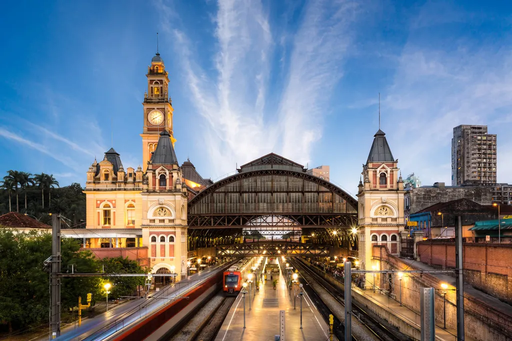
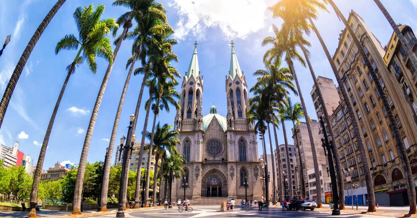
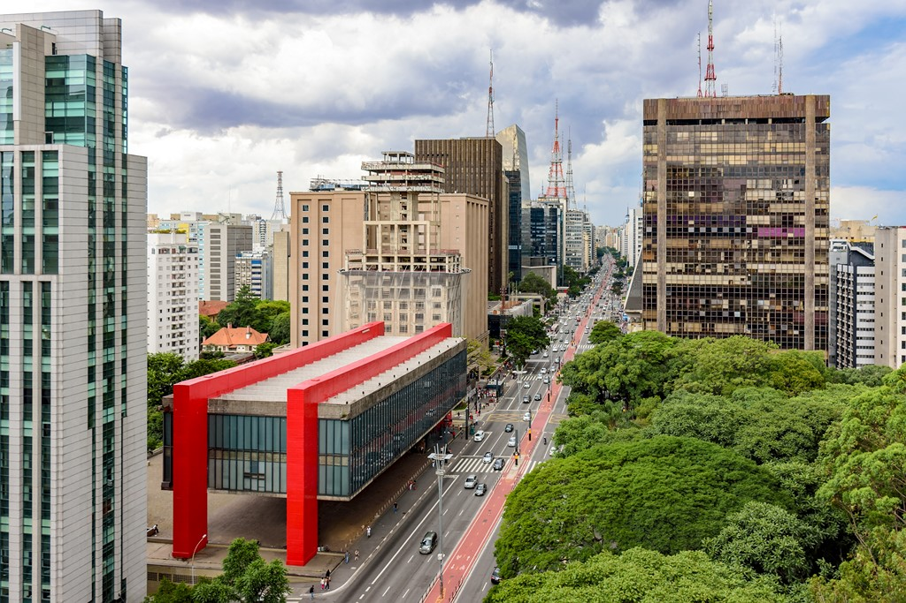

A cidade de São Paulo não é somente rica economicamente falando, mas é também um local com muita cultura, arte e belezas naturais. Se você está pensando em visitar os principais pontos turísticos de São Paulo, conheça alguns deles.
estação da Luz
Uma das principais estações ferroviarias de são paulo
catedral da sé
Catedral Metropolitana Nossa Senhora da Assunção e São Paulo, informalmente conhecida como Catedral da Sé, é o principal templo católico da cidade de São Paulo, Brasil. Localiza-se na Praça da Sé, na Zona Central do município. Desde 2007
Masp
O MASP (Museu de Arte de São Paulo) é um dos mais importantes e renomados museus de arte do Brasil e da América Latina. Inaugurado em 1968, seu edifício, projetado pelo arquiteto Lina Bo Bardi, é um ícone da arquitetura moderna, com sua estrutura suspensa por pilares, criando um grande espaço livre no térreo. O MASP é famoso por sua coleção de obras de arte ocidental, que inclui pinturas, esculturas, e objetos que vão desde a Renascença até a arte contemporânea. Além disso, o museu tem um papel central na promoção de exposições temporárias e atividades culturais, sendo um ponto de referência para a arte e a cultura em São Paulo.